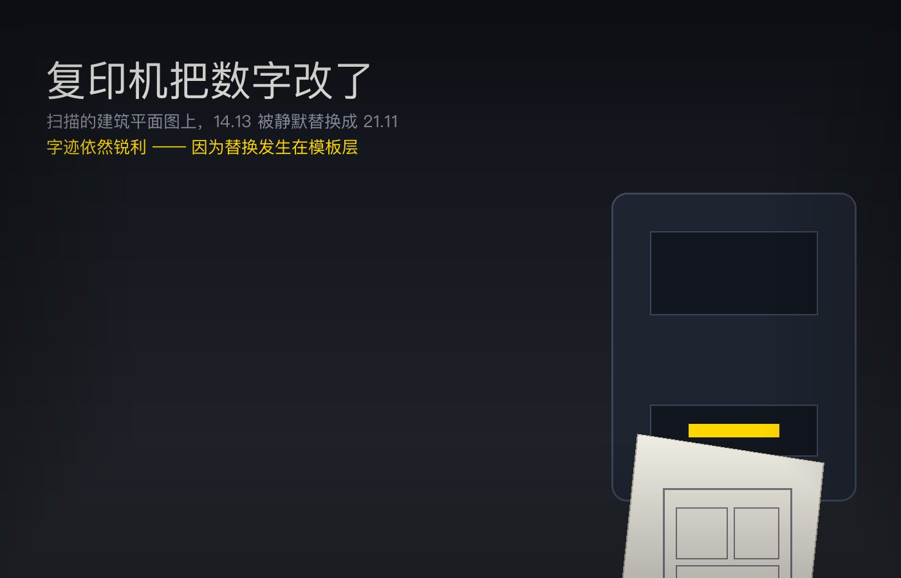
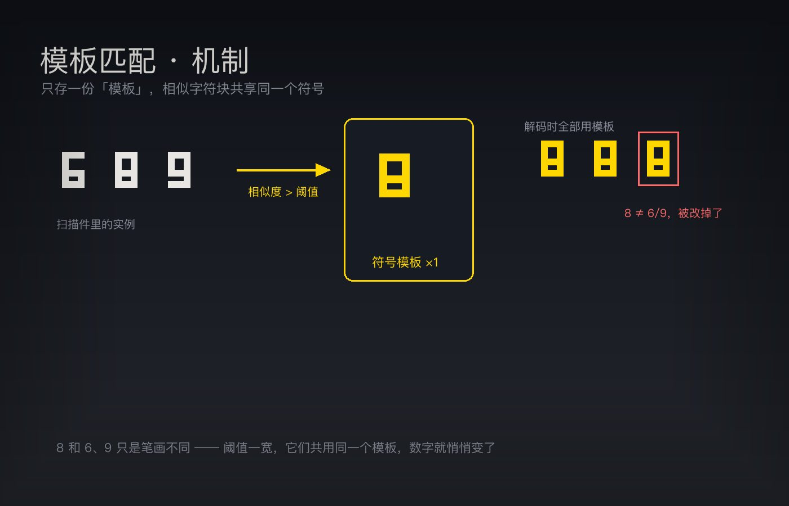
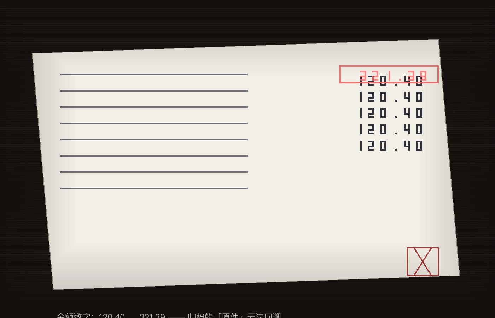

2013 · Xerox · JBIG2
体积一路降，画面一路干净，数字已经错了。
2013 年德国科学家 David Kriesel 发现：Xerox 复印机扫描的建筑图纸上，房间面积 14.13 平米被静默换成 21.11，而字迹依然锐利清晰。问题出在 JBIG2 的模板匹配——它把看起来相似的字符块共享成同一个模板。
拉一下滑块，看数字自己变全部计算在你浏览器里完成，不上传任何文件。
零门槛 · 打开就在跑
三张预设扫描件。默认加载建筑平面图，激进度已经拉到出错点。左边是「原始扫描」，右边是「JBIG2 解码」——被替换的数字会打红框，点一下看原本是什么。
核心交互 · 拖动滑块看三联指标
0% 时每个字符块都是独立模板（无损）；拉高后，相似的块开始共享模板。看体积、伪影、语义错误数三条曲线如何分道扬镳。
分步可视化 · 别一键跑完
JBIG2 把页面切成字符块，只存「模板 + 位置」。点下面的按钮，一步一步看字符块是怎么被归类进字典的。
点击「切分字符块」开始
为什么「14.13」整串变成了「21.11」
单字符模式出错时只改一个数字；整块数字模式把「14.13」整个当成一个符号，一旦匹配错模板，整串一起变。同样的激进度，两种切分方式，错误的样子完全不同。
标准里有解法，出厂默认没开
Soft Pattern Matching（SPM）在共享模板的同时，为每个实例额外保存一份与模板的差分，解码时逐像素还原。打开开关，看错误数和体积怎么变。
拿你自己的东西试
输入任意数字串，或上传一张带数字的图片，选择模拟扫描 DPI，看 JBIG2 会不会把它改错。
只列已证实条目
这个 bug 存在了约八年，涉及全球数十万台 Xerox WorkCentre / ColorQube。补丁没有召回，只是把 pattern matching 默认关掉——此前扫过的文档无法回溯验证。
替代性扫描技术指南规定：JBIG2 MUST NOT be used。
建议在生成 PDF 时不要使用 JBIG2，避免数字替换风险。
不接受用有损压缩（JPEG、JBIG2）保存的数字化记录 PDF。

